VLOOKUP: mencari data ke bawah
VLOOKUP mencari sebuah nilai di kolom pertama sebuah tabel, lalu mengambil data dari kolom lain di baris yang sama.
=VLOOKUP(dicari; tabel; kolom_ke; [persis])
| dicari | Nilai yang dicari, harus ada di kolom pertama tabel |
|---|---|
| tabel | Seluruh tabel, kunci dengan $ |
| kolom_ke | Nomor kolom yang diambil, dihitung dari kolom pertama tabel |
| persis | FALSE = harus sama persis; TRUE atau kosong = perkiraan terdekat (tabel harus terurut) |
Langkah praktik
- Pastikan nilai kunci ada di kolom paling kiri tabel.
- Ketik =VLOOKUP( lalu klik sel kunci.
- Blok tabel dan tekan F4 agar menjadi $A$2:$C$5.
- Isi nomor kolom, lalu FALSE untuk pencarian persis. Tekan Enter.
Tips
Hampir selalu pakai FALSE kecuali sedang mencari rentang nilai.
#N/A berarti kunci tidak ditemukan. Periksa spasi tersembunyi atau beda format.
Tangkapan layar praktik
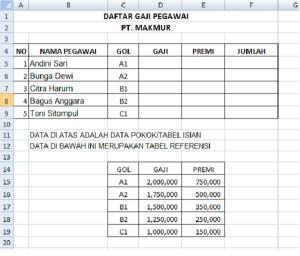
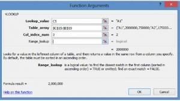
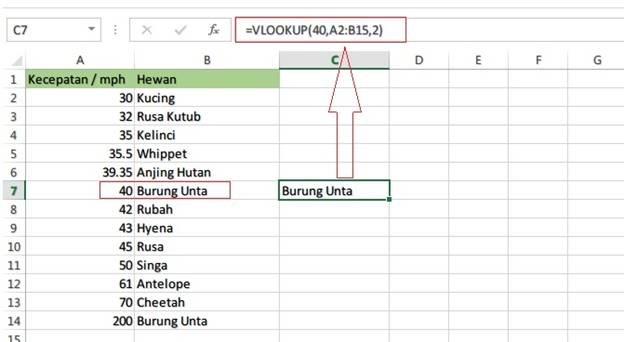
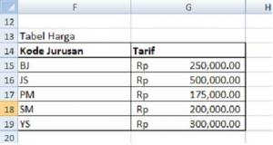
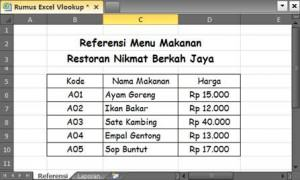
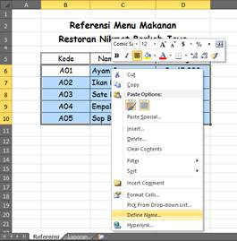
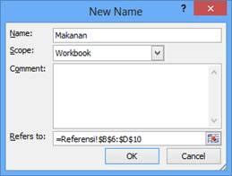
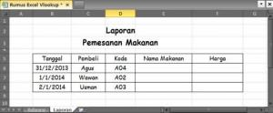
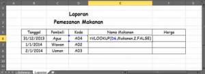
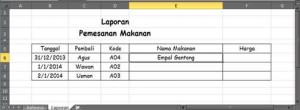
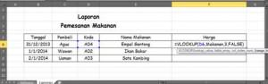
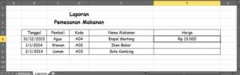
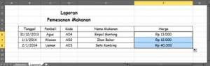
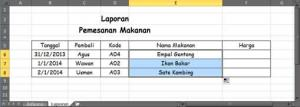